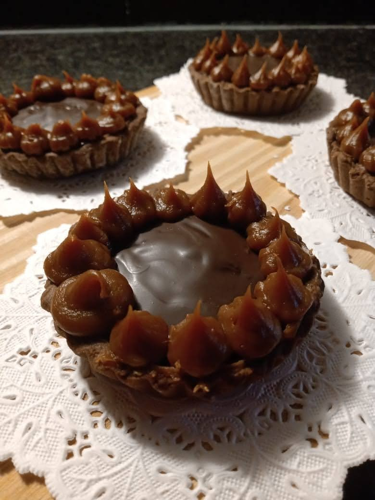
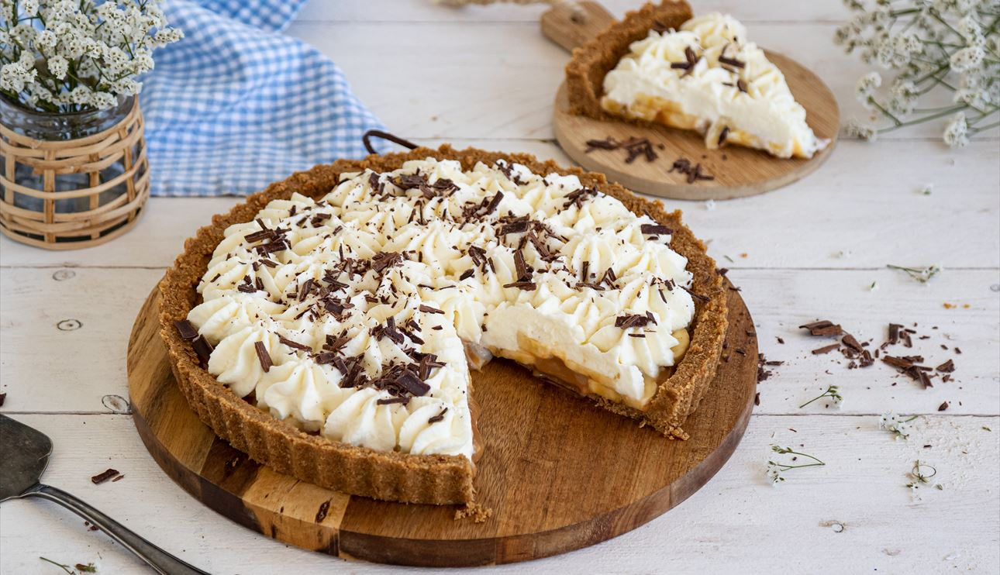
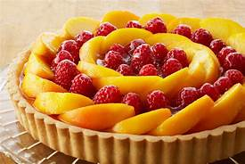

Tarta con una fina base de masa, rellena de dulce de leche cubierta de chocolate Negro, decorada con mas dulce.
Ingredientes: 200 g de manteca, 100 g de azúcar, 200 g de harina, huevo 1, 300 g de dulce de leche, 300 g de chocolate cobertura.

Tarta con una fina base de masa, rellena con una mezcla de crema de leche y dulce de leche, con una fina capa de chocolate
Ingredientes: Harina 0000 250 gr, manteca 175 gr, azúcar impalpable 100 gr, yemas 3 unidades, ralladura de naranja 1 unidad, esencia de Vainilla, 1 cdita, dulce de leche repostero 500 gr, chocolate cobertura semiamargo 150 g.

tarta con una base de masa, rellena de crema pastelera, decorada con una combinacion de frutas de estacion
tarta con una base de masa, rellena de chocolate blanco y crema de leche. Decorada con unos frutos rojos y una lluvia de chocolate rallado